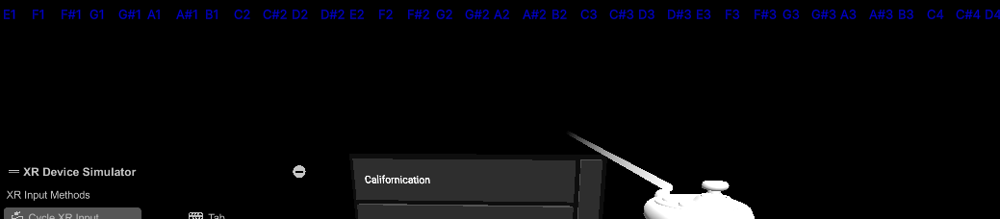

Per facilitare il lavoro in laboratorio di domani ho introdotto un interfaccia che mostra quando le singole note MIDI in input sono attive/bufferizzate dopo essersi disattivate/disattive attraverso il cambio del colore degli elementi. L'interfaccia e' solo per il debug e non viene inclusa nella versione standalone.
Per qualche ragione AlphaTab non permette di sapere alcune cose del suo stato in funzionamento, come ad esempio se il metronomo di count-in e' attivo o meno: questo crea problemi nell'utilizzare le feature piu' avanzate (e desiderate per rendere l'esperienza efficace).
A questo fine l'unica opzione e' fare in modo che la libreria fornisca le informazioni all'esterno, dal momento che non e' possibile ottenere questi valori altrimenti. Il primo tentativo e' stato modificare i metadati del .DLL distribuito via NuGet in modo tale che l'eseguibile generato da Unity abbia i permessi di accedere ai membri interni della libreria, ma questo approccio e' risultato fallimentare dal momento che Unity si confonde nel momento in cui puo' vedere alcune classi generiche interne alla libreria (questo bug non mi e' per niente chiaro e sembra che sia una limitazione del modo in cui Unity gestisce l'assimilazione dei DLL esterni nell'eseguibile). (Per dettagli riguardo a cosa ho utilizzato e come: ho scritto un programma con Mono.Cecil che prende in input l'eseguibile, lo modifica e lo scrive nella directory del progetto in Unity)
L'alternativa che volevo evitare (e che per fortuna ha funzionato) e' stata di scaricare il codice sorgente della libreria (con tutte le sue dipendenze) per poi modficare il codice sorgente in TypeScript e capire come transpilarlo da TypeScript a C# (che e' il modo ufficiale in cui viene compilata la libreria ...): il motivo per il quale volevo evitare questo approccio e' che avevo gia tentato di compilare la libreria ma non ci sono mai riuscito, ma oggi tentando su Linux e' andato tutto liscio.